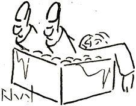
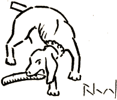

Veturante en vagono
Sur kanapo lamrisorta
Vi elspezas pli da mono
Por vojaĝ' pli malkomforta,
Kaj vi ĝuas malpli ĝue
La pejzaĝon sub tunel'
Ol sidante senenue
En la kino sur fotel'!
Tie ĉi amuzaj scenoj
Vigle pasas sur l' ekran':
„Baptofest' ĉe indiĝenoj
Meze de Baluĉistan' ...“
Kun pianoakompan' .....
* * *
Pli ol ĉarmo de l' pejzaĝo
Densa nokto de la kino
vin invitas al vojaĝo
ĉirkaŭ via ... najbarino.
Sed jen aktuala sceno
Vigle pasas sur l' ekran':
„La kaptado de baleno
En la Norda Ocean'... “
Kun pianoakompan' .....
* * *
Kvankam peze vi oscedas
Amalvoke tra l' silent',
Pruda najbarin' ne cedas
Al facila tent'!
Nun la lasta aventuro
Dum aŭtomobilveturo
De la fama komikul'
Harry Bull!
Li kondukas propramane,
Zigzagante kaj senplane
Grimpas sur la trotuaron
Kaj renversas ŝtupetaron,
Kiu falas kun pentristo
En butikon de spicisto,
Kie tima klientino
Svenas sur la margarino
Dum alia. ― ho hazardo! ―
Krie dronas en mustardo .....

La spicisto ekkoleras,
Tiajn ŝercojn ne toleras,
Tuj li kaptas energie
La pentriston, kiu ie
Kuŝis mute kaj sen movoj
En la kesto por la ovoj,
Kaj per lerta piedbat'
Lin resendas al la strat' ...
Intertempe Harry Bull
Ĉe proksima stratangul'
Evitante lanternfoston
Pasas sur vaganta hundo,
Kies li detranĉas voston
En la daŭro de sekundo!

Sed la hund' ― el pura ras', ―
Opinias ĝin kolbas'
Kaj senplue, sen hezit'
Manĝas ĝin kun apetit'.....
Tiam tremas tra la kino
Ventroskua ridgargar', ―
Sed ... la ĉarma najbarino
Havas voĉon de barbar'!
Sammomente, ― ne sen kaŭzo, ―
Eklumiĝas; estas paŭzo.
Lampoj lumas sunobrile
Kaj vi spertas nun facile,
Ke anstataŭ najbarino
Kun gracio kaj kun ĉarmo
Apud vi en tiu kino
Sidis nur... ĝendarmo!